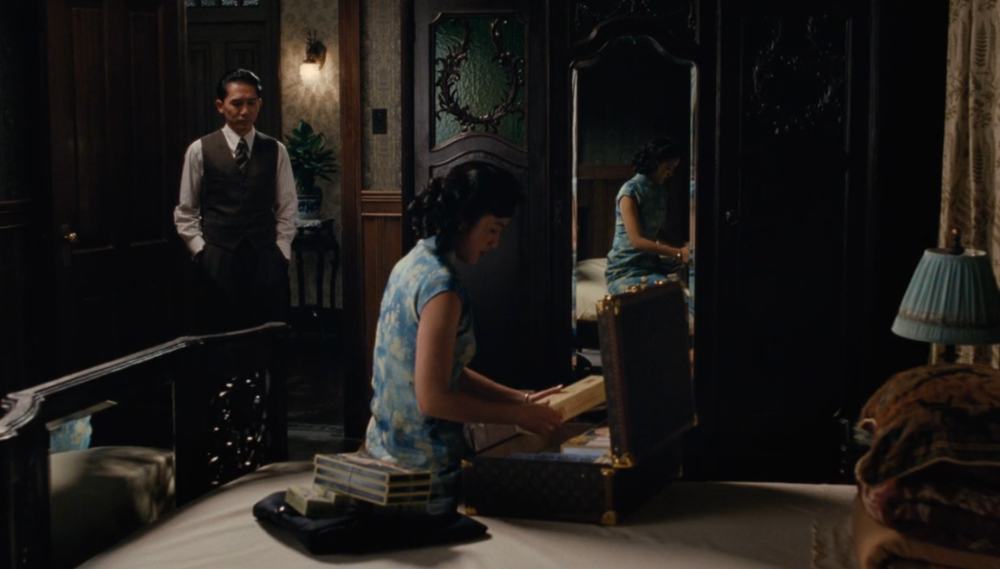
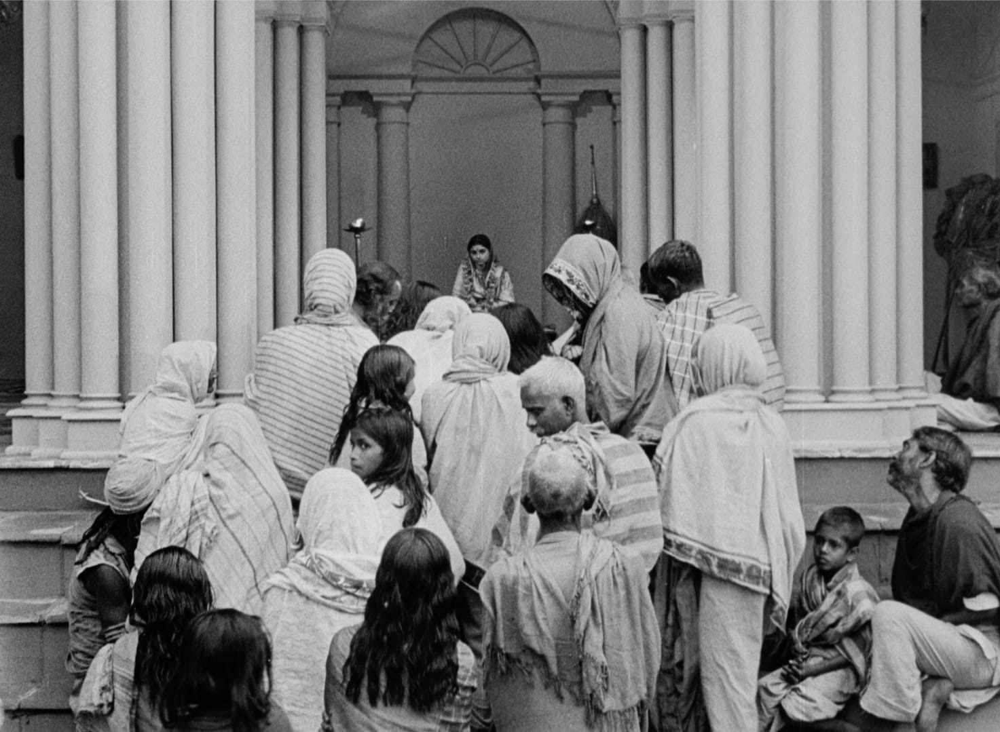
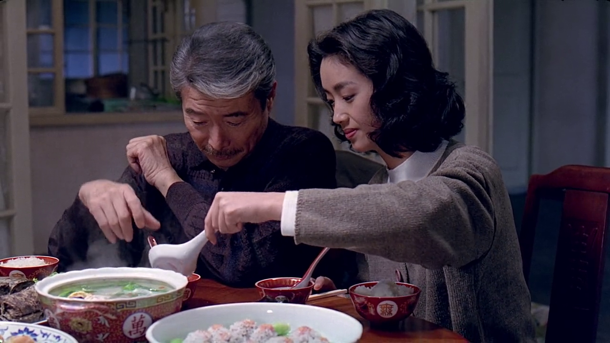
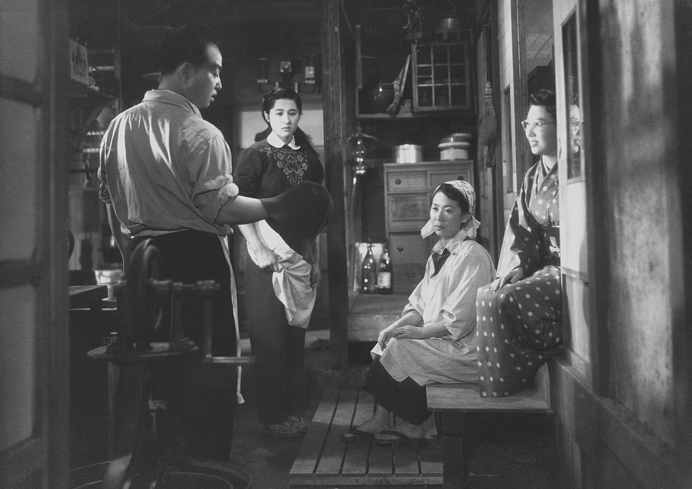

August 23, 2024
HHH: A portrait of Hou Hsiao-Hsien (1997), Olivier Assayas.

Something like a blog
LAST UPDATED — AUGUST, 2024
"We shall distinguish the provinces of art, religion, science, history, and philosophy […], we shall assume that each of these is no mere abstraction but a concrete form of experience, an activity of the whole self in which every faculty, if it is permissible to distinguish between faculties, is engaged. […] It follows that each is in some sense a kind of knowledge, an activity of the cognitive mind." - R. G. Collingwood
August 24, 2024
Burning (2018), Lee Chang-dong.
August 23, 2024
HHH: A portrait of Hou Hsiao-Hsien (1997), Olivier Assayas.
August 20, 2024
The bitter tears of Petra von Kant (1972), Rainer Weiner Fassbinder.
August 19, 2024
Fear and Trembling (1843), Søren Kierkegaard. Translated to Spanish by Darío González and Óscar Parcero. Trotta Editorial.

August 15, 2024
Sophist (360 B.C.E.), Plato. Translated to Spanish by Néstor Luis Cordero.
«
TEET. — Me parece, Extranjero, que es totalmente verdadero lo que dijimos al comienzo sobre el sofista: que su género sería difícil de cazar.
Él se muestra, en efecto, pleno de obstáculos, y cuando se defiende enfrentándonos con uno de ellos, debemos luchar primero contra éste, para poder luego alcanzarlo a él mismo.
Apenas superado el obstáculo que afirmaba que el no-ser existe, nos obstaculiza con otro, y es preciso demostrar ahora que existe lo falso en el discurso y en el juicio.
Y después de este vendrá quizá otro, y luego otro más; y, según parece, nunca se vislumbrará el final.
EXTR. — Coraje, Teeteto. Es necesario siempre ir hacia adelante, por poco que se avance.
Quien pierde el coraje ahora, ¿qué hará en aquellos casos en los que no consigue nada, o cuando se vea forzado a retroceder?
Difícilmente alguien así llegaría a ‘tomar la ciudad’, como dice el proverbio.
Pero como ya se ha superado eso que tú dices, noble amigo, lo cual fue para nosotros la fortaleza mayor que hemos conquistado, el resto será fácil y de poca importancia.»
August 10, 2024
The last metro (1980), François Truffaut.
August 09, 2024
Death by hanging (1968), Nagisa Ōshima.
August 07, 2024
REM (1989), Mircea Cărtărescu. Translated to Spanish by Marian Ochoa de Eribe for Impedimenta.
«Todo el interior estaba ocupado por varios montones de folios, miles de páginas apiladas unas encima de otras. Cuando, tras hundir los dedos en ellas y volcarlas sobre la alfombra, Egor las desperdigó por toda la estancia, pude ver que estaban atiborradas por una escritura uniforme, extrañamente inexpresiva. Pero solo cuando intenté leer algunas líneas de la obra del alargado, comprendí el inmenso horror que esta contenía: a lo largo de miles y miles de páginas, con la la paciencia y tenacidad de una hormiga, Egor había escrito una sola palabra que se repetía decenas de veces en cada página. Era la palabra no.»
July 29, 2024
The realist versus the pragmatist view of epistemology (2024), Céline Henne for Aeon magazine.
"The issue is not just what to think about things, but how to think about them. Such enquiries are concerned with the creation, revision or expansion of our frameworks. In their most radical instances, they lead to what Kuhn called ‘paradigm shifts’, as when physics moved from the Newtonian paradigm of absolute space and time to Einstein’s relativistic paradigm. While these enquiries also rely on concepts, methods and assumptions – as all enquiries do – they involve the continuous revision of existing frameworks or the creation of new ones as they progress. Consequently, these enquiries are open-ended and creative in a more fundamental sense. The product itself, not just the way of getting there, involves creation."
July 24, 2024
The night of counting the years (1969), Shadi Abdel Salam.
July 22, 2024
Lust, Caution (2007), Ang Lee.

July 20, 2024
Repast (1951), Mikio Naruse.

July 19, 2024
The virgin spring (1960), Ingmar Bergman.

July 18, 2024
La repetición (1843), Søren Kierkegaard. Translated to Spanish by Darío Gonzáles y Óscar Parcero para Editorial Trotta.
«¿Quién habría imaginado ese desenlace? Y, sin embargo, ningún otro desenlace es pensable, aunque tampoco este lo sea. Cuando todo se ha detenido, cuando el pensamiento se estanca, cuando el lenguaje enmudece, cuando la explicación retorna desesperada a su casa --- entonces tiene que haber una tormenta. ¿Quién puede entender esto? Y, sin embargo, ¿a quién podría ocurrírsele otra cosa?»
July 17, 2024
My life as a dog (1985), Lasse Hallström.

July 16, 2024
Ugetsu (1953), Kenji Mizoguchi. Rewatch.
July 15, 2024
Theaetetus (circa 350 B.C.E.), Plato. Translated to Spanish by Álvaro Vallejo Campos.
«
TEOD. — Teeteto lo soportará, Sócrates, porque no es díscolo en lo absoluto. Pero, por los dioses, dinos dónde está el error.
SÓC. — Decididamente, Teodoro, eres un amante de los argumentos y eres generoso, al tratarme como si yo fuera un saco de argumentos y pudiera extraer fácilmente uno de ellos, para decir dónde está el error en esta doctrina. Pero no te das cuenta de lo que pasa, porque los argumentos nunca proceden de mí, sino del que conversa conmigo. Yo no sé nada, a excepción de algo bien insignificante que consiste en recibir un argumento de otro que sea sabio y aceptarlo en su justa medida.
»
July 12, 2024
Streets of Shame (1956), Kenji Mizoguchi.

July 11, 2024
When cinema reflects the times: Hou Hsiao-Hsien and Edward Yang (1993), Hirokazu Koreeda.

July 07, 2024
After the curfew (1954), Usmar Ismail.

July 06, 2024
The end of summer (1961), Yasujirō Ozu.
July 03, 2024
Scattered Clouds (1967), Mikio Naruse.

June 29, 2024
The cranes are flying (1957), Mikhail Kalatozov.
June 27, 2024
The Passion of Joan of Arc (1928), Carl Theodor Dreyer.

June 23, 2024
Sambizanga (1972), Sarah Maldoror.

June 16, 2024
The Blue Kyte (1993), Tian Zhuangzhuang.

June 15, 2024
Devi (1960), Satyajit Ray.

June 13, 2024
In the mood for love (2000), Wong Kar Wai. Rewatch.

June 11, 2024
Timeo (circa 385 B.C.E.), Plato. Translated to Spanish by F. J. Olivieri.
«¿Es verdadera la afirmación de la unicidad del universo o sería más correcto decir que hay muchos e incluso infinitos mundos? Uno, si en realidad ha de estar fabricado según su modelo. Pues lo que incluye todos los seres vivos inteligibles existentes nunca podría formar un par con otro porque seria necesario otro ser vivo adicional que los comprendiera a estos dos, del que serían partes, y entonces sería más correcto afirmar que este mundo no se asemeja ya a aquéllos sino a a que que los abarca. Por ello, para que en la singularidad fuera semejante al ser vivo perfecto, su creador no hizo ni dos ni infinitos mundos, sino que éste, generado como un universo único, existe y existirá solo.»
Nudo Mixteco (2021), Ángeles Cruz.
June 10, 2024
Le Havre (2011), Aki Kaurismaki.
June 09, 2024
Primera memoria (1959), Ana María Matute.
June 02, 2024
The wild pear tree (2018), Nuri Bilge Ceylan.

June 01, 2024
Suzhou river (2000), Lou Ye.
May 31, 2024
Sonntag (2024), Pascal Thieret for NOWNESS.

Winter sleep (2014), Nuri Bilge Ceylan.
May 30, 2024
Interview to Hannah Arendt (1964), by Günter Gaus.

May 28, 2024
Kapurush (1965), Satyajit Ray.

May 20, 2024
Meno (circa 385 B.C.E.), Plato. Translated to Spanish by F. J. Olivieri.
«Me puedes decir, Sócrates: ¿es enseñable la virtud?, ¿o no es enseñable, sino que sólo se alcanza con la práctica?, ¿o ni se alcanza con la práctica ni puede aprenderse, sino que se da en los hombres naturalmente o de algún otro modo?»
May 18, 2024
La familia Karnowsky (1943), Israel Yohoshua Singer.Translated to Spanish by Rhoda Henelde and Jacob Abecasís.
«Los negocios iban bien, incluso mejor que de costumbre. La gente se aglomeraba en las calles en un ambiente festivo y de actitud temeraria, y olvidaba el hábito de hacer cuentas de ahorrar. Los camareros servían a los clientes de cabello oscuro, como de costumbre, tarta de manzana, el café, y les llevaban los periódicos de todo el mundo, y todavía se dirigían hacia ellos como Herr doctor, tanto si el título les correspondía como si no. Nadie pensaba que todo eso cambiaría. Nadie quería creerlo. Además, en caso de que llegara a suceder algo malo, les sucedería a los demás; es así como suelen pensar los seres humanos en tiempos de plaga.»
Anatomy of a fall (2023), Justine Triet. Rewatch.

May 17, 2024
Eat drink man woman (1994), Ang Lee. Rewatch.

May 12, 2024
La Haine (1995), Mathieu Kassovitz. Rewatch.

May 10, 2024
Damnation (1987), Béla Tarr.
May 9, 2024
Territorio de luz (1978), Yuko Tsushima. Traducido por Tana Oshima para Impedimenta.
«También esa mañana me había separado del suelo en el que dormía maldiciendo a mi hija por no querer encaramarse al mundo del sueño igual que yo. Lo recogí todo un poco, y para cuando terminé de preparar el desayuno, que hizo las veces de comida, ya había dado la una. Si me ponía a lavar la ropa sucia acumulada, a hacer la compra y limpiar el piso, se me echaría encima la hora de cenar. Todavía tenía cosas que planchar y coser. La sola idea me resultó agotadora y me volví a tumbar en el tatami. ¿Será aquel otro domingo en el que no ocurría nada? Tenía la sensación de estar esperando algo con angustia, pero también estaba segura de que esa expectativa se terminaría desvaneciendo. No por ser domingo resultaba más alegre sentarse a comer. Como siempre, mi hija y yo estábamos solas.»
May 5, 2024
Festen (1998), Thomas Vinterberg.

Umberto D. (1952), Vittorio De Sica.

May 4, 2024
Dust in the wind (1986), Hou Hsiao-Hsien.
May 2, 2024
Tres senderos hacia el lago (1972), Ingeborg Bachmann. Translated to Spanish by Isabel García Adánez for Siruela.

«Por fin llegó el tren y Elisabeth subió después de abrazar a su padre y se quedó de pie junto a la ventanilla, sí, su padre había menguado, aunque sólo allí, cuando estaba fuera de su casa y no paseando con ella por algún sendero del bosque, tenía de nuevo aquella mirada infantil, la mirada de un hombre mayor al que abandonaban, al que dejaban solo, y, aunque ahora era demasiado tarde, Elisabeth quiso bajar de nuevo y decirle algo… pero ¿qué?, ¿qué podía decirle?, no iba a decirle, justo al arrancar el tren, cuánto miedo tenía de no volver a verlo. Gritó, pero tal vez él ya no la oyera: ¡Te escribiré enseguida, gracias por todo, te escribiré! Elisabeth sonreía y saludaba con la mano, y albergaba la esperanza de que esa vez el tren saliera de la estación más deprisa, saludaba como si no estuviera desesperada, como una mujer radiante, su hija, una niña, la hermana de Robert, una persona que se marchaba en el tren, que se iba de viaje y cada vez se iba más y más lejos.»
April 28, 2024
Farewell my concubine (1992), Chen Kaige.
April 27, 2024
The music room (1958), Satyajit Ray.

April 25, 2024
A confucian confusion (1994), Edward Yang.
April 24, 2024
I was born, but... (1932), Yasujirō Ozu.

April 23, 2024
La mujer de la arena (1962), Kōbō Abe. Translated to Spanish by Kazuya Sakai for Siruela.
April 14, 2024
Perfect days (2023), Wim Wenders

April 07, 2024
Amores imperfectos (2006), Hiromi Kawakami. Translated to Spanish by Marina Bornas Montaña for Acantilado.

Godland (2022), Vanskabte Land.

April 01, 2024
Confesiones de una máscara (1949), Yukio Mishima. Translated to Spanish by Rumi Sato and Carlos Rubio for Alianza Editorial.

«Desde mi infancia, las ideas que yo tenía sobre la existencia humana nunca se desviaron de la teoría augustiniana de la predestinación. Una y otra vez me atormentaban dudas inútiles —y me siguen atormentando hoy—, pero sabía que eran una especie de tentaciones para caer en el pecado. Yo, fiel a mis principios deterministas, me mantenía firme. Había recibido, por así decir, el menú completo con todas las preocupaciones de la vida aún antes de saber leer. Yo no tenía más que permanecer sentado a la mesa con la servilleta puesta. Hasta el hecho de que algún día me pondría a escribir un libro tan extraño como este, tal como hago ahora mismo, aparecía ya escrito en ese menú y yo debía de haberlo visto desde el principio.»
Mother (1952), Mikio Naruse.

March 31, 2024
Yi Yi (2000), Edward Yang. Rewatch.

March 26, 2024
Flowing (1956), Mikio Naruse.

March 25, 2024
But I'm a cheerleader (1999), Jamie Babbit

March 24, 2024
Bergman Island (2021), Mia Hansen Løve. Rewatch. Second story only.
March 23, 2024
Taipei Story (1985), Edward Yang. Rewatch.

March 19, 2024
The german sisters (1981), Margarethe von Trotta.
March 17, 2024
Los apuntes de Malte Lauris Brigge (1910), Rainer Maria Rilke. Translated to Spanish by Juan de Sola for Alba Clásica.
«Creo que debería empezar a trabajar un poco, ahora que aprendo a ver. Tengo veintiocho años y no me ha ocurrido prácticamente nada. Recapitulemos: he escrito un estudio malo sobre Carpaccio, una obra de teatro que se titula Matrimonio y trata de demostrar una tesis falsa con medios ambiguos, y algunos versos. Ay, pero los versos valen tan poco, cuando se los escribe de joven. Uno debería esperar y dedicar toda una vida a atesorar sentido y dulzura, una vida larga, a ser posible, y entonces, al término de la misma, quizá fuera capaz de escribir diez versos que merecieran la pena. Y es que, contrariamente a lo que cree la gente, los versos no son sentimientos (éstos se tienen ya en la primera juventud): son vivencias. Para dar a luz un solo verso hay que haber visto muchas ciudades, hombres y cosas, hay que conocer los animales, hay que sentir cómo vuelan las aves y saber con qué ademán se abren las flores pequeñas al amanecer. Hay que ser capaz de recordar caminos de regiones desconocidas, encuentros inesperados y separaciones que se veían venir de lejos; días de infancia aún por aclarar, a los padres a los que no podíamos evitar ofender cuando nos traían una alegría que nosotros no entendíamos (era una alegría destinada a otro); las enfermedades infantiles que aparecían de un modo tan extraño y experimentaban tantas transformaciones profundas y graves, días pasados en estancias tranquilas y recogidas, y mañanas junto al mar, el mar en general, los mares, las noches de viaje que pasaban altas y como una exhalación y volaban con todas las estrellas; y ni siquiera basta con ser capaz de pensar en todo esto. Hay que haber conservado el recuerdo de muchas noches de amor, ninguna de las cuales se parece a la otra, de gritos de parturientas y de mujeres que acaban de dar a luz y, aligeradas, blancas y durmientes, se cierran. Pero también hay que haber asistido a moribundos, estado con muertos en habitaciones con la ventana abierta y ruidos esporádicos. Y tampoco basta con tener recuerdos. Hay que saber olvidarlos, si son muchos, y tener la enorme paciencia de esperar a que regresen. Porque los recuerdos en sí todavía no existen. Solo cuando se tornan sangre en nosotros, cuando se convierten en mirada y gesto, cuando se hacen indecibles y no pueden distinguirse ya de nosotros, solo entonces puede suceder que, en un momento rarísimo, brote en su centro y emane de ellos la primera palabra de un verso.»
January
Samurai Rebellion (1967), Masaki Kobayashi.
Yojimbo (1961), Akira Kurosawa.

Sword of Doom (1966), Kihachi Okamoto.
November 13, 2023
Pirosmani (1968) Giorgi Shengelaia.

"I can't live like other people do. I got stuck in the throat of this cursed life. It won't swallow me, nor let me go."
June, 2023

Por mucho tiempo me sentí desconectada de mi infancia. Mis recuerdos escaseaban y las fotografías siempre han sido pocas. En los últimos tres años eso ha cambiado y se lo debo a tres principales eventos. Primero, me encontré con la Trilogía de Koker de Abbas Kiarostami y después con Pather Panchali de Satyajit Ray. En sus paisajes reconocí algo que existía dentro de mí y me trajeron muchas imágenes de vuelta. También visité Sicilia y sus jardines de frutas me recordaron a algunos jardines de Rosamorada.
Sin embargo, nada desenterró mis recuerdos más que A Time to Live, a Time to Die ( 童年往事, Tóngnián Wāngshì) de Hou Hsiao Hsien. Sentí el sol, el calor húmedo, la ligereza de mi ropa y de mi cuerpo de niña, mis pies descalzos tocando el suelo frio. Recordé la pila de agua donde iba a pasar la tarde echada como un gato, y el movimiento de los arboles al acariciarlos el viento. El olor a mango y a ciruela. El sonido de la tormenta que se aproxima al caer la noche. El olor de las primeras gotas de lluvia sobre la tierra seca, sobre el viejo techo de teja donde más tarde se abrirían nuevas goteras. Mi cortina hondeando en la ventana de mi cuarto. Las piedras mojadas. La pequeña corriente de agua que se forma entre la calle y la banqueta. El sonido de la mecedora de mi bisabuela. El batiente de piedra donde mi perro observaba la calle. La mancha de agua en la pared de ladrillos. La pintura resquebrajada. El pasto reverdecido por la mañana. Todo estaba ahí, en mis recuerdos compartidos con Hou Hsiao Hsien.
December 13, 2021
More like listening...

Certainly this is not the first time I try to start a blog (in other words, might delete later). The idea came back to me after reading some posts from Ellen's blog. Ellen writings are so natural and personal, I am constantly invested in whatever she is writting about. Sure, that's partly because I know her and she is awesome, but also because she is a great story-teller. Probably (to my dissapointment) my writings won't be like Ellen's, yet I can hope to have a sense of her warm and honesty.
Here I want to write about science, departing from the rigid and often uninteresting ways of academic writing. That on itself is a difficult task. I've learned English mainly from academic texts and my style reflects them. I often use myriad, utilise, elucidate, and many other words that might infuriate more than one native English speaker. Yet I hope to someday find a voice that is less artificial, less boring, and simpler. Over the past year I've become a more proficient academic reader: I read, I think, I often re-read and most of the time my hands rest, for I am not an avid notetaker. Quite the opposite, I am terrible at keeping notes. But I had enough of that. My hands must do something -- I must write. I want to write about my ideas, my questions, and the articles I find interesting, not because I have many ideas or because the ones I have make any sense (most of them surely don't), but it seems like an useful way of keeping track and giving me the time to develop them more deeply.
Inevitably, I'll write about film too. Those who know me are aware I'm always watching films and often talking about them. Films have always been an important part of my life and nowadays I have immersed myself on them with certain seriousness. There's a type of beauty in films which I cannot find elsewhere, and I want to understand where my feelings come from. In Alice in the Cities, Rüdiger Vogler character notes “Talking to yourself, that's actually more like listening than speaking” — I guess that's the whole point of this something like a blog.